Scrollytelling is a style of presentation where information is revealed or highlighted while scrolling (down). It allows to focus on specific aspects of content before moving on. On a technical level, it is realized with the Closeread extension for Quarto. You can look at the code that generated this file by clicking on the ‘</> Code’ button in the top right corner.
Importing data
The first step in every analysis is data import. We will work with data collected as part of the Master Thesis Insights into real-world human light exposure: relating self-report with eye-level light logging by Carolina Guidolin (2023).
We start by loading LightLogR and setting up some environmental variables.
The data is stored in 17 text files in the data/ folder. You can access the data yourself through the LightLogR GitHub repository.
Next we require a time zone of data collection. Our data was collected in the “Europe/Berlin” time zone. If uncertain which time zones are valid, use the OlsonNames() function.
Lastly, the participant Ids are stored in the first three digits of each file name. We will extract them and store them in a column called Id. The following code defines the pattern as a regular expression, which will extract the first three digits from the file name.
This is all the setup we need. Now we can import the data by specifying the correct import function (Data were collected with the ActLumus device by Condor Instruments). The right way to specify this is through the import$device function. If you start typing import$ in the IDE of your choice, autocomplete will most likely show you all available devices. You can also look at the function documentation for import to get an overview of all devices currently supported.
After a short import process, the data are now imported and stored in the data object. By default, LighLogR shows a rich import message and an overview plot. Let’s go through them one by one.
Import messages start with general information about the amount of observations, id’s and files.
The next lines cover time zone related info. In this case it specifically tells us, that two files cross daylight savings time - this means you shold make sure that either your file contains data in UTC, or that the device’s timestamp is already adjusted after the jump. If not, you can use the argument dst_adjustment = TRUE during import.
Next comes some general information about the collection time: when observations start, end, and what time span is covered.
Lastly, the observation intervals are summarized. For every Id, the number and percent of observation intervals are shown. More rows can be printed with the print_n argument.
Successfully read in 1'034'650 observations across 17 Ids from 17 ActLumus-file(s).
Timezone set is Europe/Berlin.
Observations in the following 2 file(s) cross to or from daylight savings time (DST):
221_actlumus_Log_1607_20231030121531432
222_actlumus_Log_1020_20231030140039534
Please make sure that the timestamps in the source files correctly reflect these changes from DST<>ST.
To adjust datetimes after a jump, set `dst_adjustment = TRUE` or see `?dst_change_handler` for manual adjustment.
First Observation: 2023-08-14 10:55:21
Last Observation: 2023-10-30 15:00:32
Timespan: 77 days
Observation intervals:
Id interval.time n pct
1 201 10s 60042 100%
2 202 10s 59957 100%
3 204 10s 61980 100%
4 205 10s 61015 100%
5 206 10s 60691 100%
# ℹ 28 more rows
Finally, an overview plot is shown (if auto.plot = FALSE is not set). The plot gives a quick idea when (x-axis) data were collected among the varying participants (y-axis).
Importantly, the plot shows implicit gaps in the data. Based on the main epoch calculated for each participant, LightLogR will draw an uninterrupted sequence from first observation till last and checks, where actual data points are available.
When there are gaps, the plot will visualize this with grey areas, but also in the legend (sometimes gaps are to small to visualize in the overview).
The overview plot can be accessed anytime with the gg_overview() function in LightLogR, which has many customization options.

Cleaning your data
lore ipsum….
Source Code
---title: "Scrollytelling"author: Johannes Zaunerformat: closeread-html: css: cr-tufte.css code-tools: true code-overflow: wrap---:::{.epigraph}> Scrollytelling is a style of presentation where information is revealed or highlighted while scrolling (down). It allows to focus on specific aspects of content before moving on. On a technical level, it is realized with the [Closeread](https://closeread.netlify.app){target="_blank"} extension for Quarto. You can look at the code that generated this file by clicking on the '</> Code' button in the top right corner.:::## Importing dataThe first step in every analysis is data import. We will work with data collected as part of the Master Thesis *Insights into real-world human light exposure: relating self-report with eye-level light logging* by Carolina Guidolin (2023).:::{.cr-section}:::{style="padding-block: 20svh"}:::We start by loading LightLogR and setting up some environmental variables. @cr-setup:::{#cr-setup}```{r, files}#| echo: true#| eval: falselibrary(LightLogR)path <- "data"files <- list.files(path, full.names = TRUE)tz <- "Europe/Berlin"pattern <- "^(\\d{3})"data <- import$ActLumus(files, tz = tz, auto.id = pattern)```:::The data is stored in 17 text files in the *data/* folder. You can access the data yourself through the [LightLogR GitHub repository](https://github.com/tscnlab/LightLogR/tree/main/vignettes/articles/data){target="_blank"}.[@cr-setup]{highlight="2-3"}Next we require a time zone of data collection. Our data was collected in the "Europe/Berlin" time zone. If uncertain which time zones are valid, use the `OlsonNames()` function. [@cr-setup]{highlight="4"}Lastly, the participant Ids are stored in the first three digits of each file name. We will extract them and store them in a column called `Id`. The following code defines the pattern as a *regular expression*, which will extract the first three digits from the file name.[@cr-setup]{highlight="5"}This is all the setup we need. Now we can import the data by specifying the correct import function (Data were collected with the ActLumus device by Condor Instruments). The right way to specify this is through the `import$device` function. If you start typing import$ in the IDE of your choice, autocomplete will most likely show you all available devices. You can also look at the function documentation for [import](https://tscnlab.github.io/LightLogR/reference/import_Dataset.html#devices){target="_blank"} to get an overview of all devices currently supported. [@cr-setup]{highlight="6"}::::::{.cr-section}:::{style="padding-block: 20svh"}::::::{#cr-import .scale-to-fill}```{r, import}library(LightLogR)path <- "data"files <- list.files(path, full.names = TRUE)tz <- "Europe/Berlin"pattern <- "^(\\d{3})"data <- import$ActLumus(files, tz = tz, auto.id = pattern, print_n = 5, auto.plot = FALSE)```:::After a short import process, the data are now imported and stored in the `data` object. By default, LighLogR shows a rich import message and an overview plot. Let's go through them one by one. [@cr-import]Import messages start with general information about the amount of observations, id's and files.[@cr-import]{pan-to="0%,50%"}The next lines cover time zone related info. In this case it specifically tells us, that two files cross daylight savings time - this means you shold make sure that either your file contains data in UTC, or that the device's timestamp is already adjusted after the jump. If not, you can use the argument `dst_adjustment = TRUE` during import. [@cr-import]{pan-to="0%,15%"} Next comes some general information about the collection time: when observations start, end, and what time span is covered. [@cr-import]{pan-to="0%,-10%"} Lastly, the observation intervals are summarized. For every Id, the number and percent of observation intervals are shown. More rows can be printed with the `print_n` argument. [@cr-import]{pan-to="0%,-50%"}::::::{.cr-section}:::{style="padding-block: 20svh"}::::::{#cr-overview .scale-to-fill}```{r, overview}plot <- data %>% gg_overview() ggplot2::ggsave("figures/overview.png", plot, width = 10, height = 8)```:::Finally, an overview plot is shown (if `auto.plot = FALSE` is not set). The plot gives a quick idea when (x-axis) data were collected among the varying participants (y-axis). [@cr-overview]Importantly, the plot shows implicit gaps in the data. Based on the main epoch calculated for each participant, LightLogR will draw an uninterrupted sequence from first observation till last and checks, where actual data points are available. [@cr-overview]{pan-to="0%,40%" scale-by="2"}When there are gaps, the plot will visualize this with grey areas, but also in the legend (sometimes gaps are to small to visualize in the overview). [@cr-overview]{pan-to="-50%,-50%" scale-by="1.5"}The overview plot can be accessed anytime with the `gg_overview()` function in LightLogR, which has many customization options. [@cr-overview]:::## Cleaning your datalore ipsum....